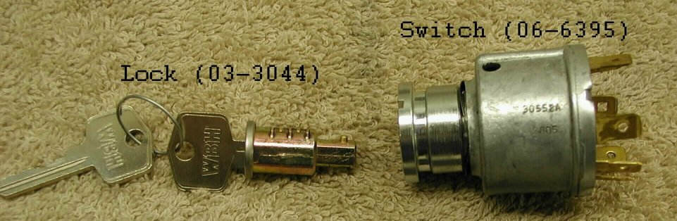
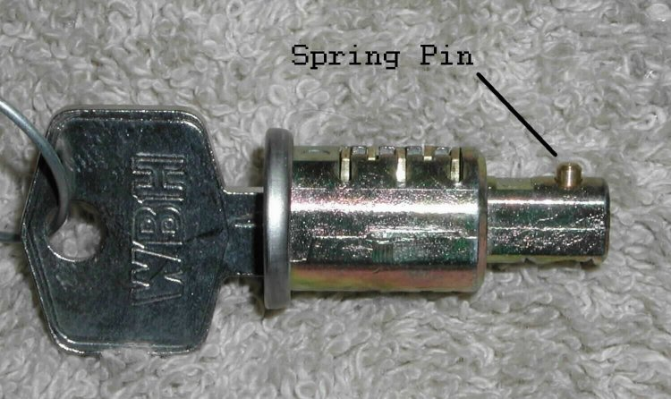
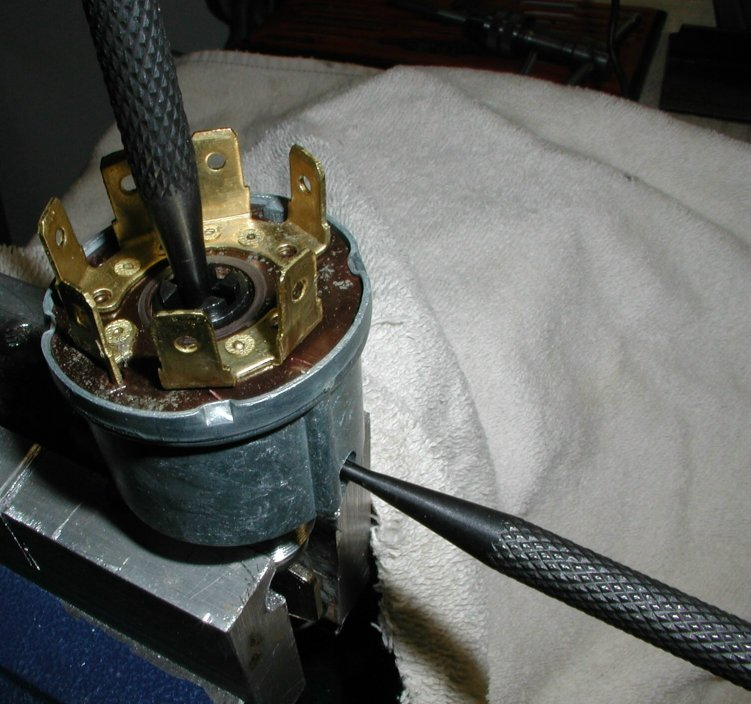
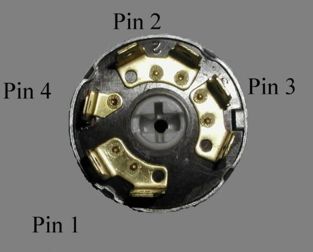
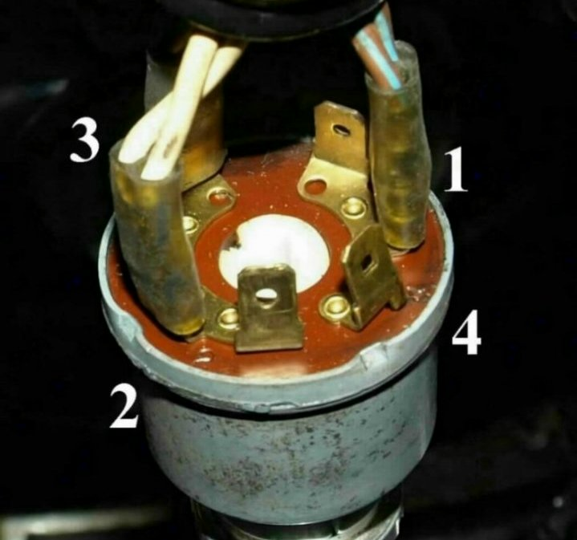
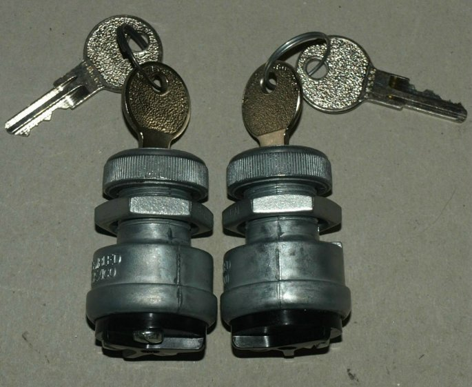
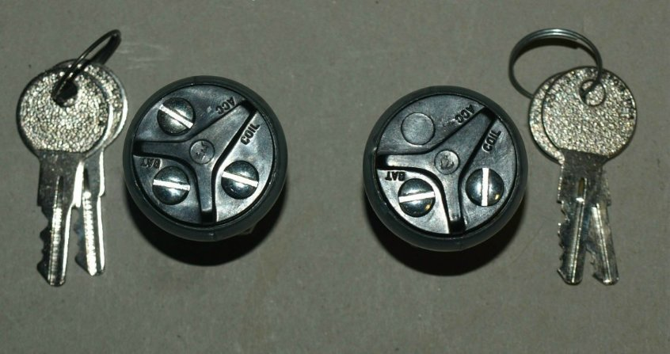

Master Switch and Lock Assembly

This picture shows the lock & keys for ignition switch (part # 03-3044) and the four position ignition switch (part # 06-6395).
The lock and switch are sold separately or you can purchase them as an assembly (part # 51-121015).
Pricing:
Removing the lock from the switch.
The lock has a spring pin (as shown in the next picture) that fits into a recess inside the switch.
The switch has a hole in the side, corresponding to the recess that the spring pin fits into.
Lock -- 03-3044,
$14.55.
Switch -- 06-6395,
$65.00.
Assembly -- 51-121015,
$79.55.

You will need two punches or suitable tools to remove the lock. A 3/32" punch will fit into the hole in the side of the switch and compress the spring pin on the lock and a 1/8" punch will fit into the hole in the end of the switch. When you compress the spring pin, you can push the lock out of the switch, using the punch through the end of the switch.

Inserting the lock into the switch.
Inserting the lock is as simple as lining up the spring pin on the lock with the hole in the side of the switch and push the lock home.

The normal wire colors for 1972 and newer Commandos are as follows:
- Pin 1 -- (Brown / Blue) Power into the switch.
- Pin 2 -- (White) Power out of switch to everything except head light and tail light.
- Pin 3 -- (Brown / Green) Power out to tail light.
- Pin 4 -- (Blue / Yellow) Power out to head light.
The four position switch is operated in a clockwise position. The key can be removed in the first two positions.
- Starting from the first position, the key can be removed, turns on the tail light (parking light). Pin 1 connected to pin 3.
- Turn the key clockwise to the second position, the key can be removed, all power is off. Pin 1 is not connected to any other pin.
- Turn the key clockwise to the third position, the key cannot be removed, allows the engine to be started and only the brake light, turn signals and horn to operate. Pin 1 is connected to pin 2.
- Turn the key clockwise to the fourth position, the key cannot be removed, allows the engine to be started and all lights and horn to operate. Pin 1 is connected to all the other pins.

The normal wire colors for 1971 and some 1972 Commandos are as follows:
- Pin 1 -- Brown / Blue
- Pin 2 -- White
- Pin 3 -- Brown / Green
- Pin 4 -- Not used


Pricing:
Two position master switch, part number 17-500004,
$20.00.
Three position master switch, part number 17-500005,
$0.00.
To use the two position master switch, instead of the stock switch and lock, all you have to do is connect the wire from pin 1 (Brown/ Blue wire) to BAT screw and all the other three wires to the COIL screw.
You can wire the three position master switch as the two position switch and if for some reason you only want to turn on some functions, you can use the ACC screw. If you want to allow the engine to be started and only the brake light, turn signals and horn to operate, you connect the white wire to the ACC screw.
This page was written and designed by F. H. Eaton & Associates. If you have any questions or comments, please contact us at info@fheaton.com